Diapasón
El mástil es lo único que nunca se mueve. Todo lo demás (la oración, la línea de tiempo, las barras de chips, las herramientas flotantes) se organiza a su alrededor.
Distribución
Seis cuerdas, de la E grave abajo a la e aguda arriba, y 15 trastes más la posición al aire para empezar. Los números de traste recorren el mástil, con los trastes de incrustación habituales (3, 5, 7, 9, 12, 15, 17, 19, 21) señalados para que ubiques tu posición de un vistazo.
Ajusta el mástil a tu propia guitarra con Trastes a la izquierda de la barra de visualización de marcadores: de 12 a 22.
El mástil siempre llena el ancho que se le da y nunca se desplaza de lado, así que un mástil más largo dibuja trastes más angostos y marcadores un poco más pequeños en vez de salirse del borde. Para trabajar un tramo del mástil en lugar de acortarlo, usa el limitador de rango de trastes, que enmarca una posición en el mástil que tienes, mientras que Trastes cambia cuánto mástil hay.


Barra de visualización de marcadores
Justo sobre el mástil hay una fila de chips que cambia cómo se leen los marcadores. Son los ajustes que usas constantemente, así que siempre están visibles en lugar de enterrados en la barra lateral.
| Grupo | Chips | Qué hace |
|---|---|---|
| Trastes | − / + | Cuántos trastes dibuja el mástil, de 12 a 22; ajústalo a tu propia guitarra. El valor por defecto es 15. Es el único grupo que es un paso a paso en vez de una fila de chips, y encabeza la barra porque describe el mástil y no los marcadores que están sobre él. |
| Etiquetas | Notas / Intervalos / Ninguna | Notas imprime nombres de notas (G, A♯). Intervalos imprime grados de la escala (1, 2, ♭3). Ninguna deja puntos sin nada; útil para ponerte a prueba. |
| Formas | Círculos / Intervalos | Círculos dibuja todos los marcadores iguales. Intervalos da a cada grado su propio contorno (cuadrado, rombo, hexágono) para que la fundamental se lea distinto de una tercera incluso en Gris. |
| Colores | Color / Gris | Color da a cada intervalo su propio color, así que un grado se reconoce antes de leerlo. Gris hace todos los marcadores iguales, lo que mantiene el foco en las formas y la geometría. |
| Alteraciones | ♯ Sostenidos / ♭ Bemoles | Si las notas de tecla negra se leen como F♯ o G♭. Solo tiene sentido cuando las etiquetas muestran nombres de notas, así que este grupo se atenúa (pero sigue visible) cuando Etiquetas está en Intervalos o Ninguna. |
Todos los grupos excepto Trastes son de tipo radio: un chip está encendido y tocar el chip encendido no hace nada. En una ventana angosta la barra se desplaza de lado en vez de partirse.
Tres de los cuatro grupos de marcadores llegan más allá del mástil. Etiquetas, Colores y Alteraciones también definen cómo se leen la línea de tiempo de la escala y el Atlas de acordes, así que una nota se nombra, se deletrea y se colorea igual dondequiera que la encuentres. (El Atlas conserva los nombres de las notas cuando Etiquetas está en Ninguna: un selector cuyas opciones no llevan etiqueta no tiene con qué elegir.) Formas es solo del mástil: la línea de tiempo y el Atlas dibujan marcadores redondos.
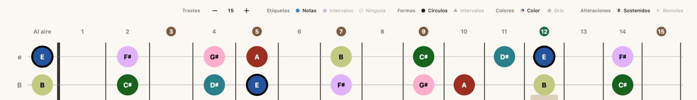
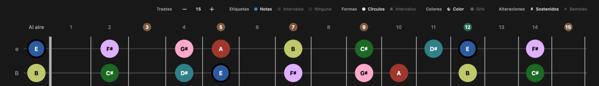
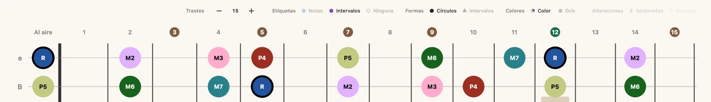
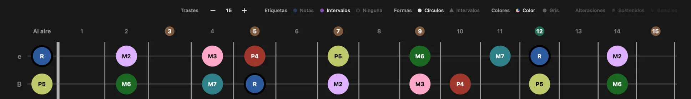
Marcadores de notas
Los marcadores muestran qué notas pertenecen a la escala, el acorde o la tríada actual. Todo lo relativo a cómo se leen (sus etiquetas, formas, colores y alteraciones) se define en la barra de visualización de marcadores sobre el mástil. La nota raíz siempre se destaca frente a las demás notas.
Las dos capturas de abajo muestran el grupo Formas en acción.
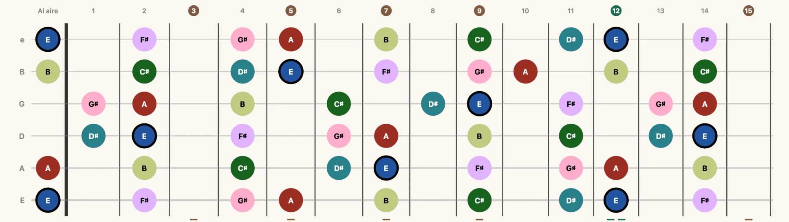
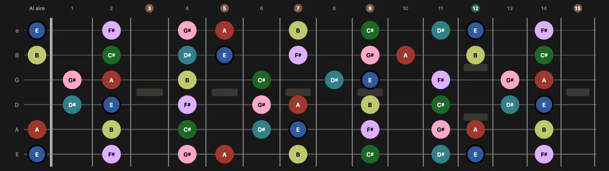
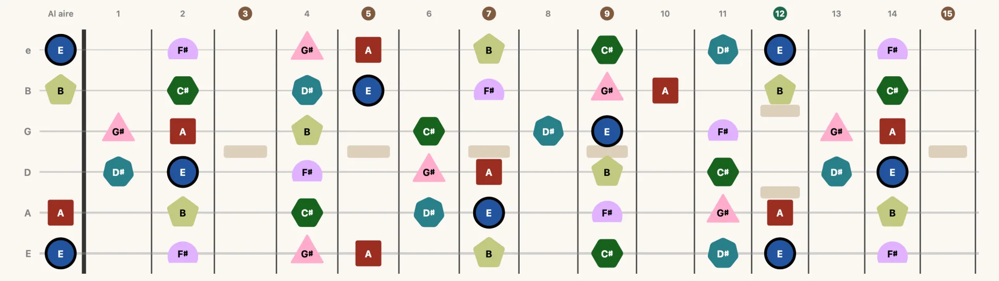
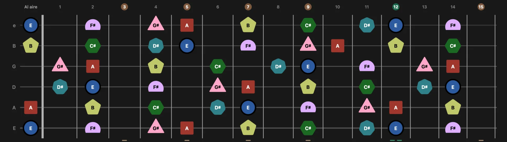
La rueda de intervalos
Con Colores en Color, el relleno de un marcador es su distancia desde la fundamental de la tonalidad: los mismos doce colores en toda la app, así que una tercera mayor se ve como una tercera mayor en cualquier tonalidad. Esa fundamental es el único ancla: el mástil, la línea de tiempo y el Atlas de acordes miden desde ella, y sigue siendo la fundamental de la tonalidad incluso mientras hay un acorde activo, así que una nota conserva un solo color en los tres. Cambiar la fundamental recolorea todo el mástil; cambiar el tipo de escala no.
- FundamentalUnísono
- Segunda menorUn semitono
- Segunda mayorDos semitonos
- Tercera menorTres semitonos
- Tercera mayorCuatro semitonos
- Cuarta justaCinco semitonos
- TritonoSeis semitonos
- Quinta justaSiete semitonos
- Sexta menorOcho semitonos
- Sexta mayorNueve semitonos
- Séptima menorDiez semitonos
- Séptima mayorOnce semitonos
Las notas del acorde nunca se ocultan. Cuando hay un acorde activo junto a una tonalidad, las notas que pertenecen al acorde siguen dibujadas aunque caigan fuera de la escala. Los acordes alterados, los acordes prestados, las dominantes secundarias y las notas de bajo con barra aparecen, por tanto, tal como son, en lugar de ser filtrados por la tonalidad.
Línea de tiempo de la escala
Sobre el mástil, la línea de tiempo dispone los doce semitonos en fila. Las notas que pertenecen a la escala actual están rellenas; el resto se ve atenuado. Cuando hay un acorde activo, sus notas también se marcan, así que puedes leer el acorde frente a su tonalidad en una sola línea.
La fila empieza en lo que estás aprendiendo, así que nunca se parte en dos. En Escalas la casilla del extremo izquierdo es la tonalidad que elegiste y la escala sube desde ahí; pon Etiquetas en Intervalos y podrás leer los grados de corrido, R primero. En Acordes es el acorde el que toma el frente de la fila y la escala de la tonalidad se desplaza a su alrededor.
Unos rieles horizontales enmarcan la fila para mostrar la estructura: las notas del acorde se unen por encima, las de la escala por debajo. Pequeños rótulos Acorde y Escala nombran cada riel, y unos triángulos marcan cada fundamental.
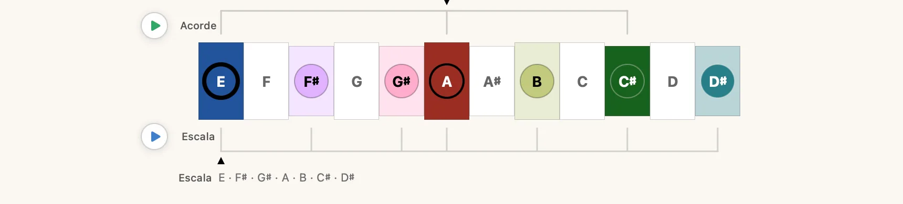
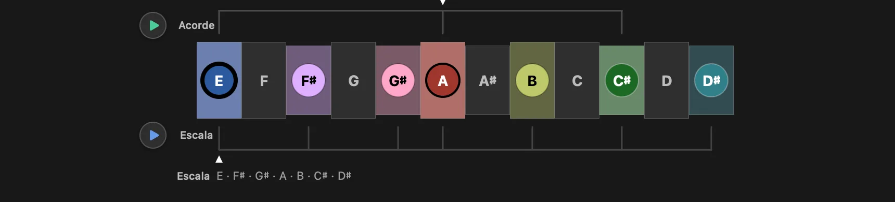
Transportes de la línea de tiempo
En el borde inicial de la línea de tiempo hay hasta dos transportes redondos, cada uno en el riel que reproduce: el transporte Acorde junto al riel del acorde sobre la fila, el transporte Escala junto al riel de la escala debajo. Presiona uno para que suene; presiónalo de nuevo para detenerlo. Un transporte que está sonando se rellena de sólido.
- Escala: reproduce la escala como una corrida, siguiendo el patrón y el rango de trastes que tengas en pantalla.
- Acorde: sostiene el acorde.
Un transporte va montado en un riel, así que basta un riel para que aparezca uno: el transporte Escala está ahí siempre que hay una escala en la línea de tiempo; el transporte Acorde, siempre que hay un acorde activo. Eso incluye Tríadas, que ahora puede hacer sonar la tríada que te está mostrando.
Bajo la fila, una sola línea de notas deletrea lo que el transporte está a punto de hacer sonar. Sigue al sujeto del modo en que estás (el acorde en Acordes y Tríadas, la escala en Escalas), salvo mientras algo suena, cuando sigue al sonido. Cuando los dos transportes están arriba antepone Escala o Acorde, para que sepas cuál está describiendo.
La línea de la escala se deletrea a partir de las notas que realmente sonarán, así que reducir el rango de trastes o activar una caja reduce la línea igual que reduce la corrida. Si el rango visible no contiene notas tocables, la línea dice No hay notas en este rango de trastes en lugar de dejarte presionar un botón muerto.
El deletreo sigue al resto de la app: Etiquetas decide si lees nombres de notas o grados de intervalo, y Alteraciones si son sostenidos o bemoles. Responde a una pregunta distinta de la línea de tiempo que tiene encima: la línea de tiempo mapea la tonalidad; la línea de notas dice qué hará sonar este transporte.
Agrupaciones visuales: superposiciones y cajas
Justo debajo del mástil, una barra de chips a juego dibuja sistemas de patrones sobre lo que ya está ahí. Qué grupos aparecen depende del modo en que estés.
La fila es más ancha de lo que cabe en una ventana angosta, así que se parte a propósito en lugar de truncarse: los interruptores que cambias en plena práctica (Rango de trastes y Notas fuera del acorde en Acordes) se quedan fijos en su lugar mientras los sistemas de patrones se desplazan detrás. Donde el contenido de verdad se corta, pasa bajo un desvanecimiento suave, así que un chip rebanado se lee como más fila y no como un daño.
CAGED
No / Todas / C / A / G / E / D. Superpone una de las cinco formas CAGED (o todas a la vez) sobre la escala, el acorde o la tríada actual. Disponible en todos los modos de aprendizaje.
Cómo se dibuja una forma se define en Configuración → Diapasón → Superposiciones de formas → Vista CAGED:
- Recuadro: el contorno de la región de la forma.
- Líneas: líneas que conectan las notas de la forma.
- Ambos: contorno y líneas juntos.
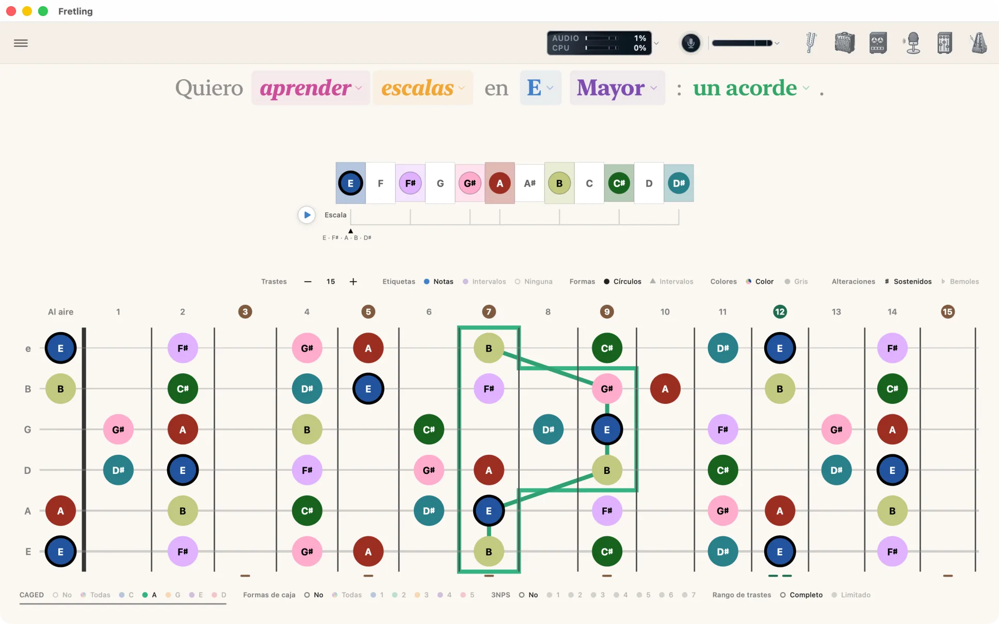
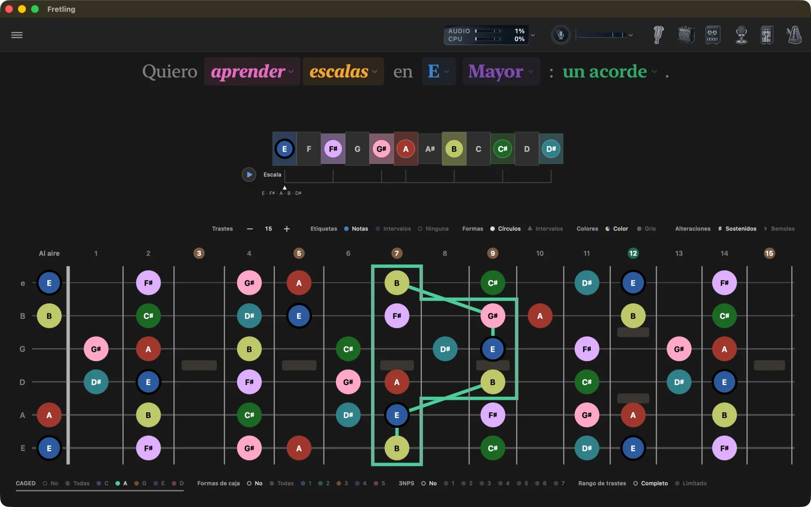
Formas de caja
No / Todas / 1 / 2 / 3 / 4 / 5. Delinea una de las cinco cajas de posición en el mástil, o las cinco a la vez. De quién son las cajas depende del modo. En Escalas pertenecen a la escala que elegiste: cada una de las doce escalas tiene sus propias cinco, así que una escala Mayor recibe las posiciones mayores y no un sustituto pentatónico. En Acordes son las posiciones de la tonalidad, dibujadas bajo el acorde. En Tríadas vienen de la pentatónica que corresponde a la tríada: pentatónica mayor para mayor y aumentada, pentatónica menor para menor y disminuida.
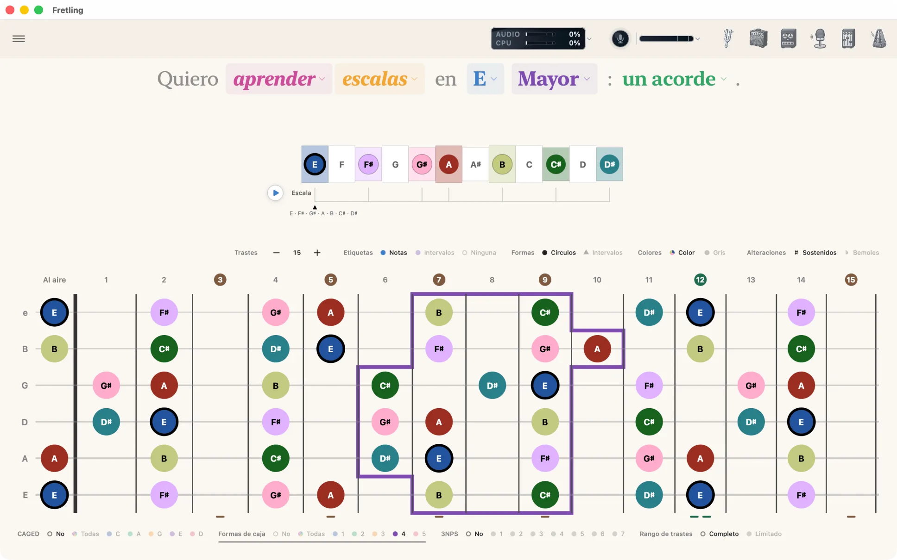
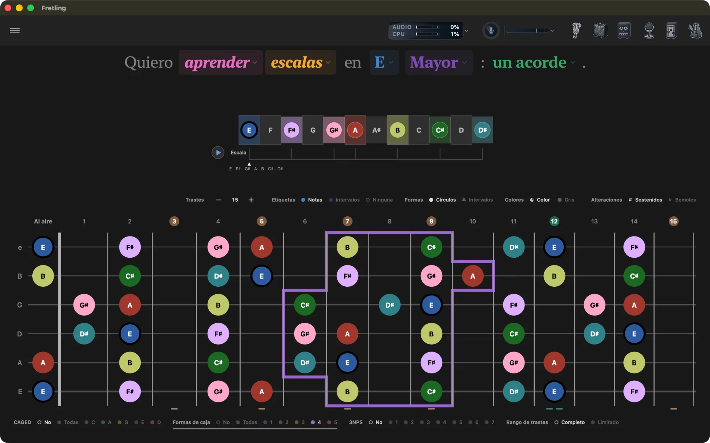
Formas de acorde (Acordes y Progresiones)
No / Sí. Activa y desactiva las superposiciones de formas de acorde en el mástil; ver Formas de acorde más abajo para saber qué dibujan y los ajustes que las acompañan.
3 notas por cuerda
No / 1 … 7. Solo en el modo Escalas. Dibuja un patrón con tres notas de la escala en cada cuerda. Cuántos patrones existen depende de la escala: una escala de siete notas da siete, y las escalas más pequeñas ofrecen menos.
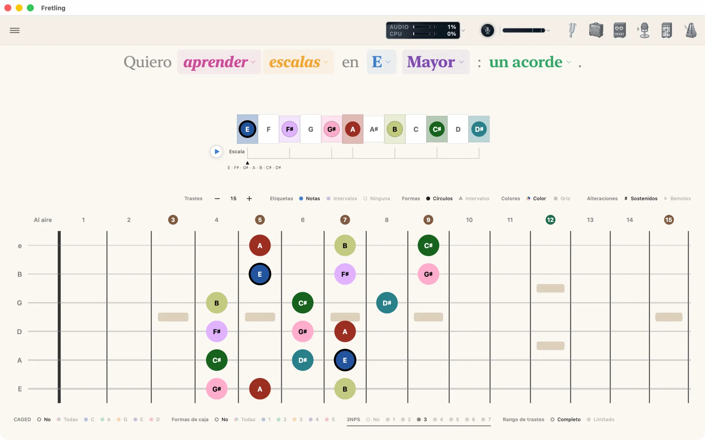
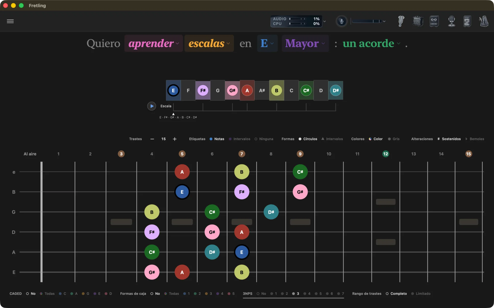
Cuerdas
No / 123 / 234 / 345 / 456. Solo en el modo Tríadas. Reduce el mástil a un conjunto de tres cuerdas adyacentes para que trabajes una forma de tríada sin que el resto del mástil compita por tu atención.
Notas fuera del acorde
No / Sí. Solo en el modo Acordes. No muestra solo las notas del acorde; Sí mantiene el resto de las notas visibles debajo, en gris, para que el acorde se lea dentro de su tonalidad en lugar de flotar en un mástil vacío.
Rango de trastes
Completo / Limitado. Todos los modos. Limitado enmarca una ventana de posición en el mástil para que trabajes un tramo de trastes; Completo devuelve el mástil entero. Mientras la ventana está arriba, el grupo lleva un tercer chip que indica el tramo (3–8), que se abre como un menú de posiciones con nombre.
Líneas de tríada
En el modo Tríadas, se activa con Mostrar líneas de tríadas en Configuración: dibuja una línea a través de cada voicing de la tríada en el mástil, la misma gramática de unir puntos que usa la superposición CAGED. Solo los voicings que una mano puede sostener reciben línea, así que una nota que no pertenece a ninguna forma en el conjunto de cuerdas elegido queda marcada sin ella.
Formas de acorde
En el modo Acordes, el grupo Formas de acorde de la barra de Agrupaciones visuales dibuja en el mástil digitaciones reales y tocables del acorde seleccionado, tomadas de una base de datos abierta de digitaciones. Ponlo en Sí para mostrarlas y en No para ocultarlas. Tres ajustes en Configuración → Diapasón → Superposiciones de formas definen cómo se comportan:
- Mostrar números de dedos: imprime qué dedo toca cada nota.
- Pistas de forma en la línea de tiempo: marca las notas de la forma también en la línea de tiempo de la escala, además del mástil.
- Interacción CAGED: decide qué pasa cuando las formas de acorde y las superposiciones CAGED están activadas a la vez:
- Coexistir: dibuja ambas.
- Exclusivo: ganan las formas de acorde; CAGED se oculta mientras las formas están activas.
- Reemplazar CAGED: las formas de acorde sustituyen a CAGED por completo, y el grupo de chips CAGED desaparece de Agrupaciones visuales.
Una leyenda bajo el mástil nombra las formas dibujadas en ese momento. Lleva el mismo rótulo Formas de acorde que el interruptor, porque enumera el mismo sistema: apaga el interruptor y la leyenda se va con él.
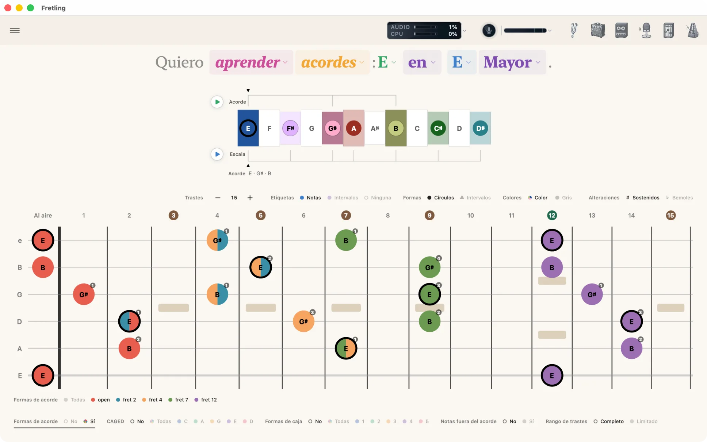
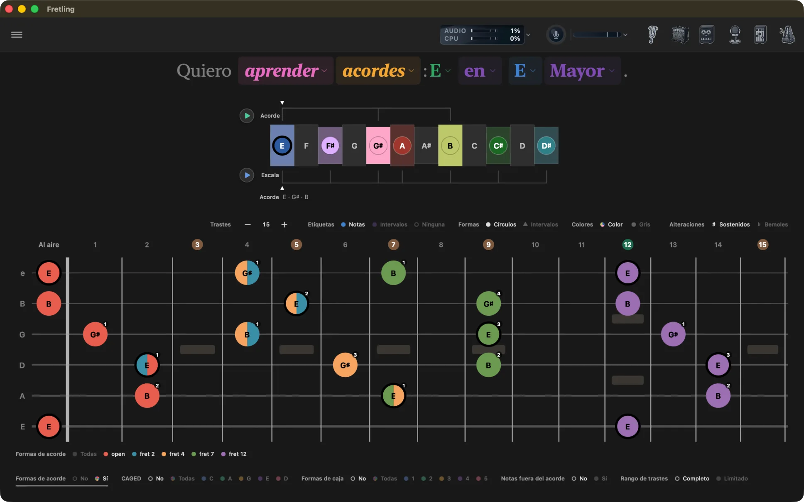
Limitador de rango de trastes
Pon Rango de trastes en Limitado en la barra de Agrupaciones visuales y se dibuja una ventana de posición en el propio mástil: un tramo enmarcado con una pestaña delgada de agarre en cada borde. Los trastes de fuera se silencian en lugar de vaciarse, porque apartado y fuera de la escala no deben verse iguales.
- Arrastra una pestaña de borde: mueve ese límite, ajustándose a la línea de traste más cercana.
- Arrastra los números de traste dentro del marco: desliza toda la ventana a lo largo del mástil sin cambiar su ancho.
- Toca dos veces una pestaña de borde: abre la ventana hasta ese extremo del mástil.
Los trastes límite se nombran a sí mismos como chips azules en la fila de números, sobre el mismo disco que llevan los números de incrustación. El marco nunca se rellena: reclama el tramo solo con su borde, así que los marcadores que rodea siguen exactamente igual de legibles, y cada nota dentro de él sigue siendo tocable.
Mientras la ventana está arriba, el grupo Rango de trastes lleva un chip de valor que indica el tramo: 3–8. También es un menú: ábrelo para saltar directo a una posición con nombre: Abierta, 3.ª, 5.ª, 7.ª, 9.ª o 12.ª. La reproducción de la escala también sigue la ventana.
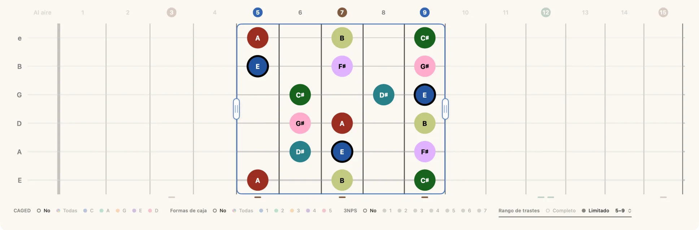
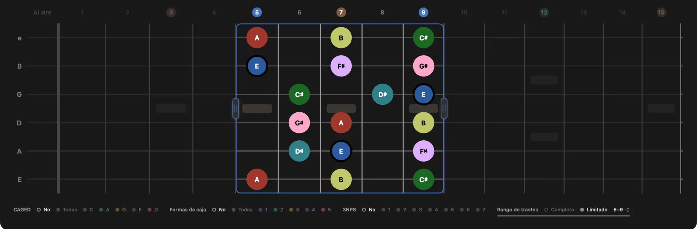
Tocar para oír
Toca cualquier marcador visible para oír esa nota, con el instrumento definido en Configuración → Audio. En iPad el mástil es totalmente multitáctil: mantén varias notas a la vez para hacer sonar un acorde y desliza un dedo a lo largo del mástil para mover con él la nota que suena. Solo responden los marcadores visibles, así que tocar madera vacía no suena.
Las notas se iluminan mientras suenan, incluidas las que reproducen los chips Escala y Acorde y las que reconoce Detección en vivo, para que veas lo que acabas de tocar.